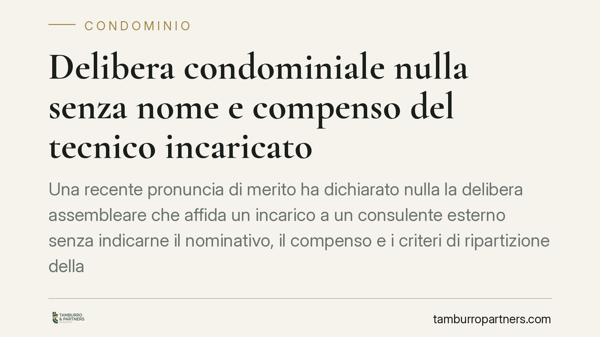

Delibera condominiale nulla senza nome e compenso del tecnico incaricato
Una recente pronuncia di merito ha dichiarato nulla la delibera assembleare che affida un incarico a un consulente esterno senza indicarne il nominativo, il compenso e i criteri di ripartizione della spesa. Il principio incide sul modo in cui le assemblee deliberano gli incarichi professionali e impone verbali più precisi, pena l'inefficacia della decisione.

Il caso
Un'assemblea condominiale aveva affidato un incarico a un consulente esterno, destinato a seguire aspetti legali e fiscali di competenza del condominio. Il verbale, però, non riportava alcuni elementi essenziali: il nome del professionista incaricato, l'importo del compenso (o un preventivo di riferimento) e i criteri di ripartizione della relativa spesa tra i condomini.
Una condomina dissenziente ha impugnato la delibera. Secondo la ricostruzione, la decisione è stata ritenuta nulla per indeterminatezza dell'oggetto: l'assemblea, in sostanza, aveva deliberato una spesa senza definirne contorni, importo e soggetto beneficiario. Il dato della data esatta della pronuncia va verificato alla fonte; qui interessa il principio di diritto, non il singolo provvedimento.
Inquadramento normativo
La delibera assembleare deve avere un oggetto determinato o determinabile. È un principio generale in materia di atti collegiali e di manifestazioni di volontà: senza un oggetto chiaro, la decisione non può produrre effetti. Deliberare una spesa per un incarico professionale significa individuare, almeno nei suoi tratti essenziali, chi riceve l'incarico, quanto costa e come la spesa viene distribuita.
Sul piano dei rimedi, occorre distinguere tra nullità e annullabilità delle delibere. La distinzione è stata ricostruita dalle Sezioni Unite della Cassazione (sent. n. 9839/2021): sono nulle le delibere prive degli elementi essenziali, con oggetto impossibile, illecito o indeterminato, oppure che incidono su diritti individuali dei condomini; sono invece annullabili quelle affette da vizi procedurali o di competenza.
La differenza non è teorica. L'annullabilità va fatta valere con impugnazione entro il termine di trenta giorni previsto dall'art. 1137 c.c., che decorre dalla delibera per i presenti dissenzienti e dalla comunicazione del verbale per gli assenti. La nullità, invece, può essere fatta valere da chiunque vi abbia interesse senza limiti di tempo, e il giudice può rilevarla d'ufficio. Qualificare il vizio come indeterminatezza dell'oggetto, quindi, amplia in modo significativo la tutela del condomino.
Implicazioni pratiche
Per l'amministratore, la conseguenza è concreta: un verbale generico che si limiti ad autorizzare "l'incarico a un consulente" o "le spese necessarie" espone la delibera al rischio di nullità, con possibile contestazione anche a distanza di tempo. Ne derivano incertezza sulla legittimità del pagamento e potenziali profili di responsabilità gestoria.
Per il condomino, si apre un margine di tutela più ampio rispetto alla sola impugnazione nei trenta giorni: la nullità non si "consolida" con il decorso del termine breve.
Un'avvertenza sui bonus edilizi. La tracciabilità delle spese e la documentazione degli incarichi tecnici rilevano anche sul piano fiscale, in materia di detrazioni e cessione dei crediti d'imposta. Si tratta però di un profilo distinto e ulteriore rispetto alla ratio civilistica della nullità qui esaminata: le due discipline non vanno sovrapposte. L'indeterminatezza dell'oggetto è un vizio della delibera; gli adempimenti fiscali rispondono a regole proprie.
Cosa fare in concreto
- All'amministratore: verbalizzare ogni incarico professionale indicando nome del soggetto, compenso o preventivo di riferimento e criteri di riparto della spesa. Allegare il preventivo al verbale quando disponibile.
- All'amministratore: evitare formule generiche di autorizzazione alla spesa; portare in assemblea importi e nominativi già definiti, così da consentire un voto consapevole.
- Al condomino dissenziente: verificare se il vizio integra nullità (oggetto indeterminato) o mera annullabilità, perché da questo dipende il termine utile per agire.
- Al condomino: in presenza di dubbi sulla validità della delibera, far constatare a verbale il proprio dissenso e conservare la comunicazione del verbale, da cui decorre il termine ex art. 1137 c.c.
- Profilo fiscale: è prudente che il professionista incaricato verifichi, su un piano separato, gli adempimenti documentali richiesti per eventuali agevolazioni edilizie, senza confonderli con i requisiti di validità della delibera.
La lezione operativa è semplice: la precisione del verbale non è formalismo, ma condizione di efficacia della decisione assembleare.
Ogni condominio ha una storia a sé.
Se gestisci un'amministrazione e vuoi un confronto su una specifica questione condominiale, scrivi allo studio. Ti rispondiamo entro un giorno lavorativo.